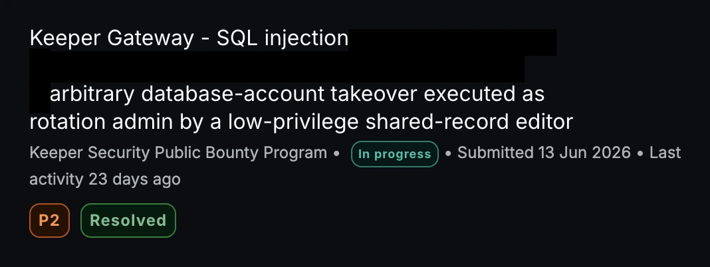

SQL injection leading to account takeover
Fixed a SQL injection issue in an automated database password management service. The issue allowed an unauthorized password change on a separate database account, leading to account takeover. The fix separated user-controlled values from database commands.
